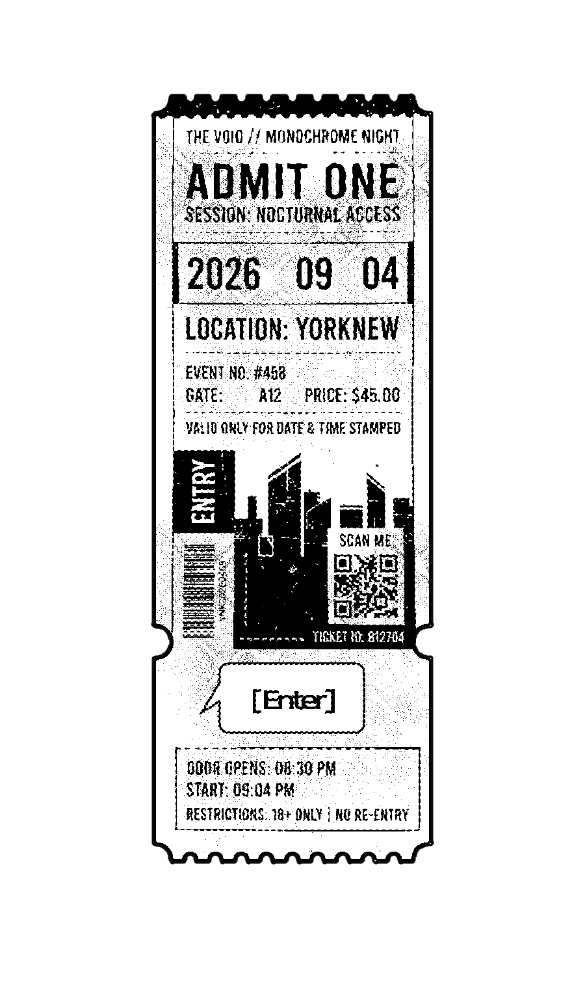

您是否已滿18歲？

您是否已滿18歲？
這裡是2026年的團酷日紀念企劃頁，在此我們集結了許多位同好的創作作品，如果你能夠一起享受就太好了！
こちらは2026年のクロクラの日記念企画ページです。たくさんの方の創作作品をまとめましたので、一緒に楽しんでいただければ幸いです！
Welcome to the 2026 Kurokura Day commemorative project page! We have gathered many creative works from fellow fans here, and we would be so happy if you could enjoy them together with us!